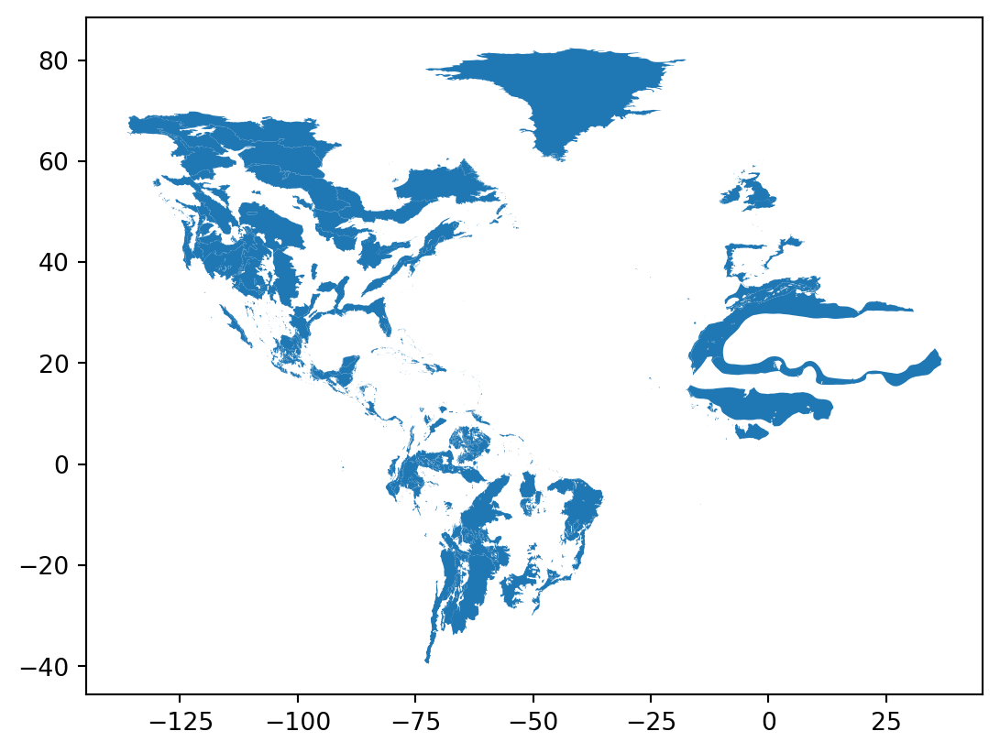

id = 'stars'
project_dirname = 'veery-migration-2023'
species_name = 'Veery Thrush'
scientific_name = 'catharus fuscescens'
year = 2023
gbif_filename = 'gbif_veery.csv'
plot_filename = 'veery_migration'
plot_height = 800Migration Data Download
Get occurrence data from the Global Biodiversity Information Facility (GBIF)
Before we get started, let’s define some parameters for the workflow. We’ll use these throughout to customize the workflow for this species:
Access locations and times of Veery Thrush encounters
For this challenge, you will use a database called the Global Biodiversity Information Facility (GBIF). GBIF is compiled from species observation data all over the world, and includes everything from museum specimens to photos taken by citizen scientists in their backyards.
TaskTry It: Explore GBIF
Before your get started, go to the GBIF occurrences search page and explore the data.
TipContribute to open data
You can get your own observations added to GBIF using iNaturalist!
STEP 0: Set up your code to prepare for download
We will be getting data from a source called GBIF (Global Biodiversity Information Facility). We need a package called pygbif to access the data, which may not be included in your environment. Install it by running the cell below:
%%bash
pip install pygbif
TaskTry It: Import packages
In the imports cell, we’ve included some packages that you will need. Add imports for packages that will help you:
- Work with reproducible file paths
- Work with tabular data
import time
import zipfile
from getpass import getpass
from glob import glob
import pygbif.occurrences as occ
import pygbif.species as species
import requestsSee our solution!
import json
import os
import pathlib
import shutil
import time
import zipfile
from getpass import getpass
from glob import glob
from io import BytesIO # Stream from web service
import earthpy
import geopandas as gpd
import pandas as pd
import pygbif.occurrences as occ
import pygbif.species as species
import requests # Access the webFor this challenge, you will need to download some data to the computer you’re working on. We suggest using the earthpy library we develop to manage your downloads, since it encapsulates many best practices as far as:
- Where to store your data
- Dealing with archived data like .zip files
- Avoiding version control problems
- Making sure your code works cross-platform
- Avoiding duplicate downloads
If you’re working on one of our assignments through GitHub Classroom, it also lets us build in some handy defaults so that you can see your data files while you work.
TaskTry It: Create a project folder
The code below will help you get started with making a project directory
- Replace
'your-project-directory-name-here'with a descriptive name - Run the cell
- The code should have printed out the path to your data files. Check that your data directory exists and has data in it using the terminal or your Finder/File Explorer.
TipFile structure
These days, a lot of people find your file by searching for them or selecting from a Bookmarks or Recents list. Even if you don’t use it, your computer also keeps files in a tree structure of folders. Put another way, you can organize and find files by travelling along a unique path, e.g. My Drive > Documents > My awesome project > A project file where each subsequent folder is inside the previous one. This is convenient because all the files for a project can be in the same place, and both people and computers can rapidly locate files they want, provided they remember the path.
You may notice that when Python prints out a file path like this, the folder names are separated by a / or \ (depending on your operating system). This character is called the file separator, and it tells you that the next piece of the path is inside the previous one.
# Create data directory
project = earthpy.Project(
dirname='your-project-directory-name-here')
# Display the project directory
project.project_dirSee our solution!
# Create data directory
project = earthpy.Project(dirname=project_dirname)
# Display the project directory
project.project_dirPosixPath('/home/runner/.local/share/earth-analytics/veery-migration-2023')STEP 1: Register and log in to GBIF
You will need a GBIF account to complete this challenge. You can use your GitHub account to authenticate with GBIF. Then, run the following code to enter your credentials for the rest of your session.
This code is interactive, meaning that it will ask you for a response! The prompt can sometimes be hard to see if you are using VSCode – it appears at the top of your editor window.
Tip
If you need to save credentials across multiple sessions, you can consider loading them in from a file like a .env…but make sure to add it to .gitignore so you don’t commit your credentials to your repository!
Warning
Your email address must match the email you used to sign up for GBIF!
Tip
If you accidentally enter your credentials wrong, you can set reset=True instead of reset=False.
####--------------------------####
#### DO NOT MODIFY THIS CODE! ####
####--------------------------####
# This code ASKS for your credentials
# and saves it for the rest of the session.
# NEVER put your credentials into your code!!!!
# GBIF needs a username, password, and email
# All 3 need to match the account
reset = False
# Request and store username
if (not ('GBIF_USER' in os.environ)) or reset:
os.environ['GBIF_USER'] = input('GBIF username:')
# Securely request and store password
if (not ('GBIF_PWD' in os.environ)) or reset:
os.environ['GBIF_PWD'] = getpass('GBIF password:')
# Request and store account email address
if (not ('GBIF_EMAIL' in os.environ)) or reset:
os.environ['GBIF_EMAIL'] = input('GBIF email:')STEP 2: Get the taxon key from GBIF
One of the tricky parts about getting occurrence data from GBIF is that species often have multiple names in different contexts. Luckily, GBIF also provides a Name Backbone service that will translate scientific and colloquial names into unique identifiers. GBIF calls these identifiers taxon keys.
TaskTry It
- Put the species name, catharus fuscescens, into the correct location in the code below.
- Examine the object you get back from the species query. What part of it do you think might be the taxon key?
- Extract and save the taxon key
backbone = species.name_backbone(name=)from pygbif import species, occurrences
backbone = species.name_backbone(name=f"{scientific_name}")
taxon_key = backbone["usageKey"]
taxon_key2490804STEP 3: Download data from GBIF
Downloading GBIF data is a multi-step process. However, we’ve provided you with a chunk of code that handles the API communications and caches the download. You’ll still need to customize your search.
TaskTry It: Submit a request to GBIF
Replace
csv_file_patternwith a string that will match any.csvfile when used in the.rglob()method. HINT: the character*represents any number of any values except the file separator (e.g./on UNIX systems)Add parameters to the GBIF download function,
occ.download()to limit your query to:- observations of Veery Thrush
- from 2023
- with spatial coordinates.
Then, run the download. This can take a few minutes. You can check your downloads by logging on to the GBIF website.
# Only download once
if not any(project.project_dir.rglob('csv_file_pattern')):
# Only submit one request
if not 'GBIF_DOWNLOAD_KEY' in os.environ:
# Submit query to GBIF
gbif_query = occ.download([
f'taxonKey = ',
'hasCoordinate = ',
f'year = ',
])
# Take first result
os.environ['GBIF_DOWNLOAD_KEY'] = gbif_query[0]
# Wait for the download to build
dld_key = os.environ['GBIF_DOWNLOAD_KEY']
wait = occ.download_meta(dld_key)['status']
while not wait=='SUCCEEDED':
wait = occ.download_meta(dld_key)['status']
time.sleep(5)
# Download GBIF data
dld_info = occ.download_get(
os.environ['GBIF_DOWNLOAD_KEY'],
path=project.project_dir)
dld_path = dld_info['path']
# Unzip GBIF data
with zipfile.ZipFile(dld_path) as dld_zip:
dld_zip.extractall(path=project.project_dir)
# Clean up the .zip file
os.remove(dld_path)
# Find the extracted .csv file path (first result)
original_gbif_path = next(
project.project_dir.rglob('csv_file_pattern'))
original_gbif_pathSee our solution!
# Only download once
if not any(project.project_dir.rglob('*.csv')):
# Only submit one request
if not 'GBIF_DOWNLOAD_KEY' in os.environ:
# Submit query to GBIF
gbif_query = occ.download([
f'taxonKey = {taxon_key}',
'hasCoordinate = TRUE',
f'year = {year}',
])
# Take first result
os.environ['GBIF_DOWNLOAD_KEY'] = gbif_query[0]
# Wait for the download to build
dld_key = os.environ['GBIF_DOWNLOAD_KEY']
wait = occ.download_meta(dld_key)['status']
while not wait=='SUCCEEDED':
wait = occ.download_meta(dld_key)['status']
time.sleep(5)
# Download GBIF data
dld_info = occ.download_get(
os.environ['GBIF_DOWNLOAD_KEY'],
path=project.project_dir)
dld_path = dld_info['path']
# Unzip GBIF data
with zipfile.ZipFile(dld_path) as dld_zip:
dld_zip.extractall(path=project.project_dir)
# Clean up the .zip file
os.remove(dld_path)
# Find the extracted .csv file path (first result)
original_gbif_path = next(
project.project_dir.rglob('*.csv'))
original_gbif_pathPosixPath('/home/runner/.local/share/earth-analytics/veery-migration-2023/gbif_veery.csv')You might notice that the GBIF data filename isn’t very descriptive…at this point, you may want to clean up your data directory so that you know what the file is later on!
TaskTry It
- Replace ‘your-gbif-filename’ with a descriptive name.
- Run the cell
- Check your data folder. Is it organized the way you want?
# Give the download a descriptive name
gbif_path = project.project_dir / 'your-gbif-filename'
# Move file to descriptive path
shutil.move(original_gbif_path, gbif_path)See our solution!
# Give the download a descriptive name
gbif_path = project.project_dir / gbif_filename
# Move file to descriptive path
shutil.move(original_gbif_path, gbif_path)PosixPath('/home/runner/.local/share/earth-analytics/veery-migration-2023/gbif_veery.csv')STEP 4: Load the GBIF data into Python
TaskTry It: Load GBIF data
Just like you did when wrangling your data from the data subset, you’ll need to load your GBIF data and convert it to a GeoDataFrame.
# Load the GBIF data
# Convert to GeoDataFrame
# Check results
gbif_gdf.total_boundsSee our solution!
# Load the GBIF data
gbif_df = pd.read_csv(
gbif_path,
delimiter='\t',
index_col='gbifID',
usecols=[
'gbifID',
'decimalLatitude', 'decimalLongitude',
'month'])
# Convert to GeoDataFrame
gbif_gdf = (
gpd.GeoDataFrame(
gbif_df,
geometry=gpd.points_from_xy(
gbif_df.decimalLongitude,
gbif_df.decimalLatitude),
crs="EPSG:4326")
# Select the desired columns
[['month', 'geometry']]
)
# Check results
gbif_gdf.head()| month | geometry | |
|---|---|---|
| gbifID | ||
| 4158712344 | 5 | POINT (-82.5092 41.9137) |
| 4923515059 | 5 | POINT (-87.61172 41.85281) |
| 4923522410 | 9 | POINT (-87.61172 41.85281) |
| 4923520798 | 5 | POINT (-87.61172 41.85281) |
| 4923520314 | 9 | POINT (-87.63013 41.88036) |
Ecoregions data
In this coding challenge, we use the World Wildlife Fund (WWF) ecoregions data to normalize and display migration patterns. There are many ways to accomplish a similar goal, depending on your scientific question, but we like this one because we expect species occurrence to be similar across an ecoregion at any give time.
You have a couple options for data access. You can download the ecoregions through your web browser at the World Wildlife Fund. Then, you can place it in your data directory
Remember that if you are using earthpy to manage your files, you can find your data directory using project.project_dir
However, this download is relatively large. If you are working on a computer with limited storage, you might want to download the data from an ArcGIS Feature Service using the bounds of the GBIF data to avoid extra downloads. This is a type of API (Application Program Interface) for downloading subsets of vector data. When you use the API, you can choose to only download the ecoregions where you actually have occurrence data.
STEP 1: Convert the geometry for API compatability
TaskTry It
Check out the
# Merge the GBIF observations into a single geometry
gbif_single_geo = gbif_gdf.method_here().envelope
gbif_single_geo.plot()See our solution!
# Merge the GBIF observations into a single geometry
gbif_union = gbif_gdf.geometry.union_all().envelope
gbif_union
TaskTry It
Run the code below, which converts your Polygon to a special type of GeoJSON needed for compatibility with the ArcGIS Feature Service. Check out and explore this data structure. How would you extract the geographic coordinates?
# Convert geometry to geoJSON
gbif_geojson = gbif_union.__geo_interface__
gbif_geojsonSee our solution!
# Convert geometry to geoJSON
gbif_geojson = gbif_union.__geo_interface__
gbif_geojson{'type': 'Polygon',
'coordinates': (((-129.34932, -25.36442),
(-1.117409, -25.36442),
(-1.117409, 60.404932),
(-129.34932, 60.404932),
(-129.34932, -25.36442)),)}
RespondReflect and Respond
What type of Python object is this geoJSON? How will you get the geographic coordinates only?
TaskTry It
- Replace
feature-keywith the coordinate key you noted above. - Replace CRS with the CRS of your GBIF download. It should be formatted as a 4-digit number, e.g. if the CRS is EPSG:1234, you should put
1234into Python.
# Construct ArcGIS-compatible JSON
arcgis_geom = json.dumps(dict(
rings=gbif_geojson["coordinate-key"],
spatialReference={"wkid": CRS}
))See our solution!
# Construct ArcGIS-compatible JSON
arcgis_geom = json.dumps(dict(
rings=gbif_geojson["coordinates"],
spatialReference={"wkid": 4326}
))STEP 2: Download data from the ArcGIS FeatureService
# Prepare API request
eco_url = (
"https://services5.arcgis.com/0AFsQflykfA9lXZn"
"/ArcGIS/rest/services"
"/WWF_Terrestrial_Ecoregions_Of_The_World_official_teow"
"/FeatureServer/0/query")
eco_params = {
"f": "geojson",
"where": "1=1",
"outFields": "area_km2",
"returnGeometry": "true",
# Return polygons containing any GBIF observation
"spatialRel": "esriSpatialRelIntersects",
"geometryType": "esriGeometryPolygon",
# Override web Mercator server default
"inSR": "CRS",
"outSR": "CRS",
# Must format geometry
"geometry": arcgis_geom,
"maxRecordCount": 15000,
}
# Submit API request
eco_resp = requests.get(
eco_url, params=eco_params,
headers={"Accept-Encoding": "identity"})
eco_resp.raise_for_status()
# Load binary data to DataFrame
eco_gdf = gpd.read_file(BytesIO(eco_resp.content))
# Check the downloadSee our solution!
# Prepare API request
eco_url = (
"https://services5.arcgis.com/0AFsQflykfA9lXZn"
"/ArcGIS/rest/services"
"/WWF_Terrestrial_Ecoregions_Of_The_World_official_teow"
"/FeatureServer/0/query")
eco_params = {
"f": "geojson",
"where": "1=1",
"outFields": "eco_code,area_km2",
"returnGeometry": "true",
# Return polygons containing any GBIF observation
"spatialRel": "esriSpatialRelIntersects",
"geometryType": "esriGeometryPolygon",
# Override web Mercator server default
"inSR": "4326",
"outSR": "4326",
# Must format geometry
"geometry": arcgis_geom
}
# Submit API request
eco_resp = requests.get(
eco_url, params=eco_params,
headers={"Accept-Encoding": "identity"})
eco_resp.raise_for_status()
# Load binary data to DataFrame
eco_gdf = gpd.read_file(BytesIO(eco_resp.content))
# Check the download
eco_gdf.head()ERROR 1: PROJ: proj_create_from_database: Open of /usr/share/miniconda/envs/learning-portal/share/proj failed| eco_code | area_km2 | geometry | |
|---|---|---|---|
| 0 | NT0128 | 114506 | POLYGON ((-72.72287 -3.54497, -72.724 -3.5443,... |
| 1 | NA1301 | 77590 | POLYGON ((-114.15392 27.90432, -114.16221 27.9... |
| 2 | NT0113 | 5759 | POLYGON ((-91.76695 16.85372, -91.76663 16.849... |
| 3 | PA0409 | 210027 | POLYGON ((-9.66632 53.08562, -9.6785 53.08791,... |
| 4 | NA0524 | 22605 | POLYGON ((-124.68985 49.47275, -124.70399 49.4... |
TaskTry It
Now, make a quick plot of your download to make sure that it worked correctly.
# Plot the ecoregion dataSee our solution!
# Plot the ecoregion data
eco_gdf.plot()
STEP 3 (Optional): Save your data
TaskTry It
- Create a new directory in your data directory for the ecoregions data.
- Define a path to a Shapefile where you will save the ecoregions data.
- Save the ecoregions to the file.
# Save the ecoregion dataSee our solution!
# Save the ecoregion data
eco_dir = project.project_dir / 'ecoregions'
eco_dir.mkdir(exist_ok=True)
eco_path = eco_dir / 'ecoregions.shp'
eco_gdf.to_file(eco_path)INFO:Created 1,910 records